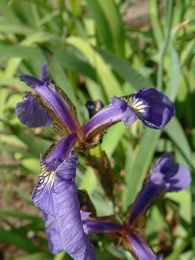
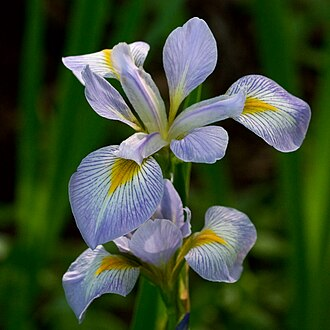
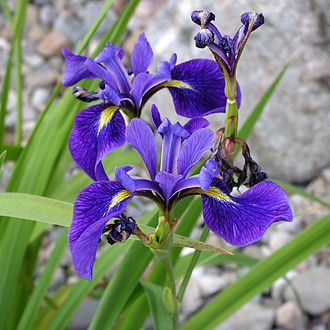

三種鳶尾花的介紹
鳶尾花 Setosa（Iris setosa）
這是一種在北美洲寬廣地區生長的鳶尾花，以其鮮艷的紫色花朵和綠色葉片著稱。適應於較冷的氣候和多樣的土壤類型，包括濕地環境。
鳶尾花 Virginica（Iris virginica）*
常見於美國東部的沼澤和濕地，喜歡濕潤的土壤，因此通常可以在水邊或水中找到。
鳶尾花 Versicolor（Iris versicolor）
也稱作藍旗鳶尾，喜歡濕潤的環境，經常在溪流和湖泊的邊緣生長。
鳶尾花比較表格
| 特徵 | Iris setosa | Iris virginica * | Iris versicolor |
|---|---|---|---|
| 花朵顏色 | 淺紫色至深紫色 | 深藍色至紫色 | 藍色、紫色和黃色 |
| 開花季節 | 早春 | 春末至夏初 | 春末至夏初 |
| 葉片形狀 | 窄而尖 | 寬而尖 | 寬而尖 |
| 喜好環境 | 多樣，包括濕地 | 濕潤土壤，沼澤和濕地 | 濕潤環境，溪流邊緣 |
| 水中生活 | 可以 | 可以 | 可以 |
* 表示可以在水中生活的環境。